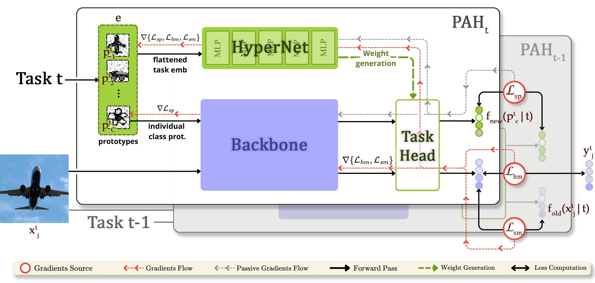

Abstract
Continual learning (CL) aims to learn a sequence of tasks without forgetting prior knowledge, but gradient updates for a new task often overwrite the weights learned earlier, causing catastrophic forgetting (CF). We propose Prototype- Augmented Hypernetworks (PAH), a framework where a single hypernetwork, conditioned on learnable task proto- types, dynamically generates task-specific classifier heads on demand. To mitigate forgetting, P AH combines cross- entropy with dual distillation losses, one to align logits and another to align prototypes, ensuring stable feature repre- sentations across tasks. Evaluations on Split-CIFAR100 and TinyImageNet demonstrate that PAH achieves state-of- the-art performance, reaching 74.5% and 63.7% accuracy with only 1.7% and 4.4% forgetting, respectively, surpassing prior methods without storing samples or heads.
Model Architecture
Installation
git clone https://github.com/pah2025/PAH
cd PAH
python -m venv env
source env/bin/activate # Or env\\Scripts\\activate on Windows
pip install -r requirements.txt
Usage
Modify config/hyper2d.py with your desired parameters and then run:
python train_hyper2d.py config/hyper2d.pyData
The script will download and save Split-MNIST and Split-CIFAR100 in the data/ folder.
You can download TinyImageNet from here.
Results
Training results are saved in the results/ directory and optionally visualized with Weights & Biases.